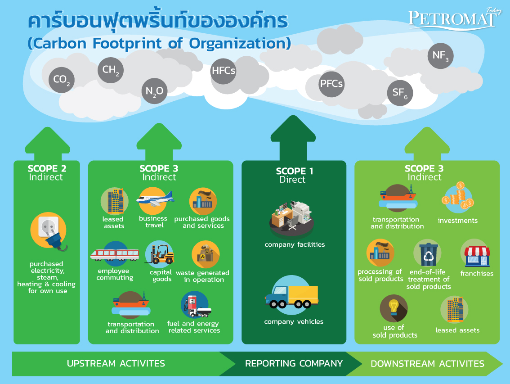

CARBON
FOOTPRINT FOR
SCHOOL
ภาวะโลกร้อน คืออะไร ?
ภาวะโลกร้อน คือ การที่ อุณหภูมิเฉลี่ยของโลกเพิ่มขึ้นจากภาวะเรือนกระจก หรือที่เรารู้จักกันดีในชื่อว่า Green house effect ซึ่งมีดันเหตุจากการที่มนุษย์ ได้เพิ่มปริมาณก๊าซคาร์บอนไดออกไซด์ จากการเผาให้มีเชื้อเพลิงต่างๆ การขนส่ง และการผลิตในโรงงานอุตสาหกรรม นอกจากนั้น มนุษย์เรายังได้เพิ่มก๊าซคลุ่มในดีร์สออกไซด์ และคลอโรฟลูโอโรคาร์บอน (CFC) เข้าไปอีกด้วย พร้อมๆกับการที่เราดักและทำลาย ป่าไม้จำนวนมากศาคาลเพื่อสร้างสิ่งอำนวยความสะดวกให้แก่มนุษย์ ทำให้กลไกในการดึงเอาก๊าซคาร์บอนไดออกไซด์เอื่อนำจากระบบบรรยากาศถูกลดเอบประสิทธิภาพลง และในที่สุดสิ่งที่เราได้กระทำต่อโลกได้ห่วนกลับมาสู่เราในลักษณะของภาวะโลกร้อน ปัจจัยสำคัญที่ทำให้เกิดสภาวะโลกร้อน ซึ่งปรากฏการณ์ก็องหลายเกิดจากภาวะโลกร้อนนั้นก็มีมูลเหตุมาจากการปล่อยก๊าซพิษต่างๆ จากโรงงานอุตสาหกรรม ทำให้แสงจากดวยส่องทะลุผ่านชั้นบรรยากาศมาสู่พื้นโลกได้มากขึ้น ซึ่งนั้นเป็นที่รู้จักกันโดยเรียกว่า สภาวะเรือนกระจก

สาเหตุหลัก ๆ ที่ทำให้เกิดภาวะโลกร้อน
การเผาไหม้เชื้อเพลิงฟอสซิล:
สาเหตุหลักของภาวะโลกร้อน (Global Warming) ซึ่งพบได้ทั่วโลก คือการใช้พลังงานจากด้านผืน น้ำมัน และก๊าซธรรมชาติในภาคอุตสาหกรรม การขนส่ง และการผลิตไฟฟ้า อันเป็นแหล่งปล่อยก๊าซคาร์บอนไดออกไซด์ (CO₂) และก๊าซเรือนกระจกอื่น ๆ ที่สำคัญที่สุด
การตัดไม้ทำลายป่า:
การลดจำนวนต้นไม้ที่ทำหน้าที่ดูดซึมก๊าซคาร์บอนไดออกไซด์ ทำให้มีการสะสมของ CO₂ ในชั้นบรรยากาศเพิ่มขึ้นอย่างต่อเนื่อง ส่งผลให้เกิดภาวะเรือนกระจกและปัญหาโลกร้อนตามมา
กระบวนการเกษตรกรรม:
การทำปศุสัตว์และเกษตรกรรมปล่อยก๊าซมีเทน (CH₄) และไนตรัสออกไซด์ (N₂O) ซึ่งเป็นก๊าซเรือนกระจกที่มีศักยภาพในการกักเก็บความร้อนสูงกว่าก๊าซคาร์บอนไดออกไซด์
ขยะและการจัดการของเสีย:
การฝังกลบขยะทำให้เกิดการปล่อยก๊าซมีเทนจากการย่อยสลายอินทรียวัตถุ นอกจากนี้ยังมีผลพิษจากการเผายะ-กับปล่อยก๊าซเรือนกระจกสู่ชั้นบรรยากาศ ทำให้เกิดภาวะโลกร้อนได้เหมือนกัน
การใช้สารเคมีและอุตสาหกรรม:
สารเคมีบางชนิด เช่น สาร CFCs (Chlorofluorocarbons) ที่ใช้ในเครื่องปรับอากาศและเครื่องทำความเย็น มีศักยภาพในการทำลายชั้นโอโซนและเพิ่มอุณหภูมิของโลก จนเกิดปัญหาโลกร้อนในที่สุด
การขยายตัวของเมืองและโครงสร้างพื้นฐาน:
การเพิ่มขึ้นของพื้นที่ก่อนครัติและแอสฟัลต์นับพื้นที่สีเขียว ส่งผลให้เกิด "เกาะความร้อน" ในเมือง ซึ่งทำให้อุณหภูมิในเขตเมืองสูงขึ้น เมื่อสะสมใหหลายพื้นที่จึงทำให้โลกเข้าสู่ภาวะโลกร้อน (Global Warming)
ผลกระทบจากภาวะโลกร้อน (Global Warming)
ด้านสุขภาพ:
ภาวะโลกร้อน (Global Warming) สามารถเพิ่มความรุนแรงของโรคต่าง ๆ เช่น โรคเกี่ยวกับระบบทางเดินหายใจที่เกิดจากมลพิษทางอากาศ โรคติดเชื้อจากยุง (อาทิ โรคมาลาเรีย โรคไข้เลือดออก) เนื่องจากการเปลี่ยนแปลงของอุณหภูมิและสภาพภูมิอากาศที่เอื้อต่อการเจรีญเติบโดยของยุง และโรคที่เกี่ยวข้องกับความร้อน อย่างโรคลมแดด ซึ่งมีความเสี่ยงสูงขึ้นในพื้นที่ที่มีอุณหภูมิสูงและอุตหภูมิสูงขึ้น
ด้านภูมิอากาศ:
ภาวะโลกร้อน (Global Warming) ส่งผลให้เกิดการเปลี่ยนแปลงของสภาพอากาศที่ไม่แน่นอน ไม่ว่าจะเป็นการเกิดคลื่นความร้อนที่รุนแรง พายุที่มีความรุนแรงมากขึ้น ฝนตกหนักเกินไปหรือแห้งแล้งเกินไป ทำให้เกิดอุกถ้ายและภัยแล้งที่มีผลกระทบต่อทั้งชีวิตมนุษย์และธรรมชาติ
ด้านนิเวศวิทยา:
ปัญหาโลกร้อนจะทำให้เกิดการเปลี่ยนแปลงทางด้านอุณหภูมิ ซึ่งส่งผลต่อการเปลี่ยนแปลงของสิ่งมีชีวิตด้วย เช่น การสูญพันธุ์ของสัตว์และพืชบางชนิดที่ไม่สามารถปรับตัวเข้ากับสภาพแวดล้อมใหม่ ๆ ได้ การเปลี่ยนแปลงนี้ยังมีผลกระทบต่อห่วงโซ่อาหารในธรรมชาติและระบบนิเวศที่อาจถูกทำลายเนื่องจากการเปลี่ยนแปลงของพื้นที่หรือองค์ถ่ายาย
ด้านเศรษฐกิจ:
ผลกระทบจากการเปลี่ยนแปลงของภูมิอากาศจากภาวะโลกร้อน (Global Warming) เช่น ความแห้งแล้ง น้ำท่วม หรือพายุที่รุนแรง สามารถทำลายกรัพยากรธรรมชาติและโครงสร้างพื้นฐานทางเศรษฐกิจ ภาคเกษตรกรรม การท่องเที่ยวและอุตสาหกรรมที่เกี่ยวข้องกับธรรมชาติ โดยส่งผลให้เกิดความเสียหายทางเศรษฐกิจที่มีมูลค่าสูงและกำให้เศรษฐกิจท้องถิ่นและระดับประเทศต้องเผชิญกับความท้าทายใหม่ ๆ
📺 สื่อวิดีโอให้ความรู้เกี่ยวกับภาวะโลกร้อน
วิดีโอให้ความรู้เกี่ยวกับภาวะโลกร้อนและผลกระทบต่อโลกของเรา
Carbon Footprint คืออะไร?
Carbon Footprint คือ ปริมาณก๊าซเรือนกระจกทั้งหมดที่ถูกปล่อยออกมาจากกิจกรรมของมนุษย์ ไม่ว่าจะเป็นการใช้ชีวิตประจำวัน การคมนาคมขนส่ง การผลิตสินค้าปโภคบริโภค ฯลฯ ทางพฤติให้เห็นกาพง่าย ๆ การดำเนินชีวิตประจำวันของเรากก คน ไม่ว่าจะเป็นการเลี้ยงสัตว์ การใช้ไฟฟ้า การเดินทางโดยรถยนต์ส่วนตัว หรือแม้กระทั้งของเสียที่เกิดจากกอาหารในแต่ละวัน ล้วนแต่ก่อให้เกิดการปล่อยก๊าซเรือนกระจกทั้งสิ้น
โดยก๊าซเรือนกระจกที่น่าหน่วงพวงรณาม์อยู่ 7 ตัวด้วยกัน คือ ก๊าซคาร์บอนไดออกไซด์, ก๊าซมีเทน, ก๊าซในตรีสออกไซด์, กลุ่มก๊าซไฮโดรฟลูออโรคาร์บอน, กลุ่มก๊าซเปอร์ฟลูออโรคาร์บอน, ก๊าซซัลเฟอร์เฮกซะฟลูออโรไซด์ และก๊าซไนโตรเจนไตรฟลูออโรไซด์
ผลกระทบของ Carbon
ผลกระทบจากคาร์บอนมีทั้งด้านสิ่งแวดล้อมและสุขภาพ ได้แก่ โลกร้อนขึ้น ทำให้เกิดภัยพิบัติรุนแรงและบ่อยขึ้น, การสูญเสียความหลากหลายทางชีวภาพ, ระดับน้ำทะเลสูงขึ้น และระบบนิเวศเปลี่ยนแปลง สำหรับมนุษย์ การสูดดมคาร์บอนไดออกไซด์แบปริมาณมากจากที่ให้เกิดผลกระทบต่อสุขภาพ เช่น หัวใจเต้นเร็ว, เลือดเป็นกรด, หายใจลำบาก, และหมดสติได้ นอกจากนี้ ยังส่งผลกระทบต่อเศรษฐกิจและสังคม เช่น ต้นทุนสินค้าและบริการสูงขึ้น และความเหลื่อมล้ำทางสังคมที่มากขึ้น
ผลกระทบต่อสิ่งแวดล้อม
- ภาวะโลกร้อน: ทำให้อุณหภูมิเฉลี่ยของโลกสูงขึ้น
- ภัยพิบัติทางธรรมชาติ: เกิดภัยพิบัติรุนแรงและบ่อยขึ้น เช่น ภัยแล้ง, น้ำท่วม, พายุ
- การสูญเสียความหลากหลายทางชีวภาพ: สัตว์หลายชนิดมีสถานะกันบริดตัวเข้ากับการเปลี่ยนแปลงสภาพภูมิอากาศได้ทันทำให้ประชากรสัตว์ป่าลดลง
- ระดับน้ำทะเลสูงขึ้น: น้ำแข็งที่ละลายส่งผลให้ระดับน้ำทะเลสูงขึ้น
- การเปลี่ยนแปลงระบบนิเวศ: เช่น การเปลี่ยนแปลงของฤดูกาล, การย้ายถิ่นของสัตว์, และการเปลี่ยนแปลงของแหล่งอาหาร
GHG Protocol การจัดทำบัญชีก๊าซเรือนกระจก มาตรฐานสู่ความยั่งยืนขององค์กร
" ประเทศไทยได้ประกาศเป้าหมายว่า ภายในปี 2030 จะต้องลดการปล่อยก๊าซเรือนกระจกให้ได้ร้อยละ 30-40 จากการดำเนินการตามปกติ สู่การเป็นกลางทางคาร์บอน (Carbon Neutrality) ในปี 2050 และการปล่อยก๊าซเรือนกระจกสุทธิเป็นศูนย์ (Net Zero) ภายในปี 2065" จากจุดเริ่มต้นจากการดำเนินตัวในการสร้างสมดุลให้ซับบรรยากาศของโลกข้องนานาประเทศผ่านพิธีสารโตเกียว (Kyoto Protocol) ในปี 1997 สู่แผนเป้าหมายของไทยที่ต้องการสลดการปล่อยก๊าซเรือนกระจก ทำให้องค์กรต่างต้องปรับแผนการดำเนินงาน ตั้งเป้าหมายในการดำเนินธุรกิจอย่างยั่งยืน (Sustainability) ซึ่งต้องดำเนินการลดหรือดูดซึมยภารปล่อยก๊าซคาร์บอนกี่เงส่องทำบัญชีคาร์บอน (Carbon Accounting) ซึ่งมีขั้นตอน ข้อมูลใน การจัดการกับการจัดเก็บข้อมูลและการคำนวณ การกำหนดขอบเขตของการประเมินการปล่อยก๊าซเรือนกระจก (Scope of GHGs Emissions) ตั้งจะกำหนดมาตรการการลดหรือดูดซึมยภาคาร์บอนได้ ต้องสามารถดรวดวจอบความถูกต้องได้ มีความโปร่งใส ข้อมูลที่ได้สามารถนำไปวิเคราะห์ในการวางแผนงาน บริหารจัดการในการดำเนินกิจการ ซึ่งต้องมีการรายงาน และตรวจสอบรายงานการปล่อยก๊าซเรือนกระจกขององค์กรอย่างสม่ำเสมอรักด้วย
GHG Protocol
GHG Protocol คือ มาตรฐานการทำบัญชีก๊าซเรือนกระจกสำหรับภาครัฐและเอกชน ซึ่งได้รับการพัฒนาโดย World Resource Institute (WRI) ร่วมกับ World Business Council for Sustainable Development (WBCSD) มีการแบ่งการปล่อยก๊าซเรือนกระจก ทั้งทางตรงและทางอ้อมเป็น 3 scope
องค์กรบริหารจัดการก๊าซเรือนกระจก

การคำนวณปริมาณการปล่อย Carbon
ปริมาณการปล่อยก๊าซเรือนกระจก = ข้อมูลกิจกรรม × ค่าการปล่อยก๊าซเรือนกระจก
ข้อมูลกิจกรรม (Activity Data) คือ ปริมาณการใช้พลังงานหรือปริมาณก๊าซเรือนกระจกที่เกิดขึ้นจากกระบวนการที่ทำให้เกิดการปล่อยก๊าซออกมา เช่น ปริมาณการใช้น้ำมันเชื้อเพลิง ปริมาณการใช้ไฟฟ้า ที่มีบอกมาเป็นหน่วยของการใช้งาน
ค่าการปล่อยก๊าซเรือนกระจก (Emission Factor) คือ ค่าที่แสดงปริมาณการปล่อยก๊าซเรือนกระจกต่อหน่วย
ผลการคำนวณ
ตัวอย่างการเก็บรวบรวมข้อมูลกิจกรรมที่มีการปล่อยและดูดกลับก๊าซเรือนกระจก
| กิจกรรม | แหล่งข้อมูล | หน่วย |
|---|---|---|
| การใช้ไฟฟ้า | ใบเสร็จรับเงิน | กิโลวัตต์-ชั่วโมง |
| การใช้น้ำมันเชื้อเพลิงยานพาหนะ ประเภทน้ำมันดีเซล | ใบเสร็จรับเงิน | ลิตร |
| การเดินสารท่าความเย็นสำหรับอากาศและยานพาหนะ | ใบเสร็จรับเงิน | กิโลกรัม |
| การใช้น้ำประปา | ใบเสร็จรับเงิน | ลูกบาศก์เมตร |
แนวทางการลดปริมาณ Carbon
แนวทางการลดปริมาณ Carbon
ด้านพลังงาน
ใช้พลังงานหมุนเวียน
ปรับปรุงประสิทธิภาพการใช้พลังงาน
ด้านการเดินทางและ
คมนาคม
ใช้ระบบขนส่งสาธารณะ
เลือกใช้รถยนต์ไฟฟ้า
ด้านอุตสาหกรรม
และองค์กร
ปรับกระบวนการผลิต
จัดทำระบบจัดการคาร์บอน
แนวทางการ
ลดปริมาณ
Carbon
ด้านการบริโภคและ
การใช้ชีวิต
ลดการใช้พลาสติก
เลือกซื้อสินค้าท้องถิ่น
ด้านสิ่งแวดล้อมและพื้นที่สีเขียว
ปลูกต้นไม้
สนับสนุนโครงการ Carbon Offset
1. ด้านพลังงาน
พลังงานหมุนเวียน
• ใช้พลังงานหมุนเวียน เช่น พลังงานแสงอาทิตย์ ลม หรือชีวมวล
• ปรับปรุง ประสิทธิภาพการใช้พลังงาน เช่น ใช้หลอด LED เครื่องใช้ไฟฟ้าเบอร์ 5
• ปิดอุปกรณ์ไฟฟ้าเมื่อไม่ใช้งาน และถอดปลั๊กเพื่อลดพลังงานสแตนด์บาย
2. ด้านการเดินทางและคมนาคม
ระบบขนส่งสาธารณะ
• ใช้ระบบขนส่งสาธารณะ, จักรยาน, หรือ เดินเท้า
• เลือกใช้รถยนต์ไฟฟ้า (EV) หรือรถยนต์ไฮบริด
• วางแผนเส้นทางเพื่อลดการขับรถย้อนซ้ำ และบำรุงรักษารถให้อยู่ในสภาพดี
3. ด้านการบริโภคและการใช้ชีวิต
ลดการใช้
• ลดการใช้ พลาสติกแบบใช้ครั้งเดียว
• เลือกซื้อสินค้า ท้องถิ่น และ สินค้าที่มีฉลากคาร์บอนต่ำ (Carbon Label)
• ลดการบริโภค เนื้อสัตว์โดยเฉพาะเนื่อวัว เพราะมีการปล่อยก๊าซมีเทนสูง
• นำของกลับมาใช้ซ้ำ (Reuse) และรีไซเคิล (Recycle)
4. ด้านอุตสาหกรรมและองค์กร
จัดการคาร์บอน
• ปรับกระบวนการผลิตให้ ใช้พลังงานและทรัพยากรอย่างมีประสิทธิภาพ
• จัดทำ ระบบจัดการคาร์บอน (Carbon Management System)
• สนับสนุน เทคโนโลยีดักจับและกักเก็บคาร์บอน (Carbon Capture and Storage)
• รายงานผลและลดการปล่อยคาร์บอนในห่วงโซ่อุปทาน (Supply Chain)
5. ด้านสิ่งแวดล้อมและพื้นที่สีเขียว
ปลูกต้นไม้
• ปลูกต้นไม้และอนุรักษ์พื้นที่ป่า
• สนับสนุนโครงการ Carbon Offset เช่น การปลูกป่า หรือการผลิตพลังงานสะอาด
• จัดการของเสียและน้ำเสียอย่างถูกวิธีเพื่อลดก๊าซมีเทน
แบบประเมินการเรียนรู้
📋 กรุณากรอกข้อมูลส่วนตัวก่อนเริ่มแบบทดสอบ
ℹ️ ข้อมูลนี้จะถูกเก็บเพื่อประเมินผลการเรียนรู้ของท่าน